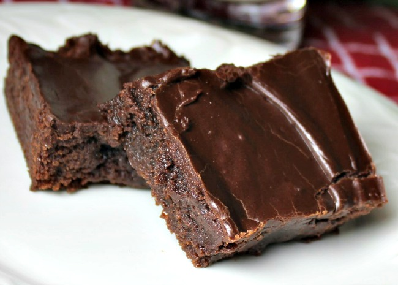

Best Brownies

Description
These brownies always turn out!
Ingredients
- 1/2 cup Butter
- 1 cup white sugar
- 2 eggs
- 1 teaspoon vanilla extract
- 1/3 cup unsweetened cocoa powder
- 1/2 cup all-purpose flour
- 1/4 teaspoon salt
- 1/4 teaspoon baking powder
Frosting:
- 3 tablespoons butter,softened
- 3 tablespoons unsweetened cocoa powder
- 1 tablespoon honey
- 1 teaspoon vanilla extract
- 1 cup confectioner's sugar
Directions
- Preheat oven to 350 degrees F (175 degrees C).
Grease and flour an 8-inch square pan.
- In a large saucepan, melt 1/2 cup butter. Remove from heat,
and stir in sugar, eggs, and 1 teaspoon vanilla.
Beat in 1/3 cup cocoa, 1/2 cup flour, salt, and baking powder.
Spread batter into prepared pan.
- Bake in preheated oven for 25 to 30 minutes. Do not overcook.
- To Make Frosting: Combine 3 tablespoons softened butter,
3 tablespoons cocoa, honey, 1 teaspoon vanilla extract, and
1 cup confectioners' sugar. Stir until smooth. Frost brownies
while they are still warm.
Nutrition Facts
Per Serving:183 calories; protein 1.8g; carbohydrates 25.7g;
fat 9g; cholesterol 44.2mg; sodium 109.7mg.
Home Page